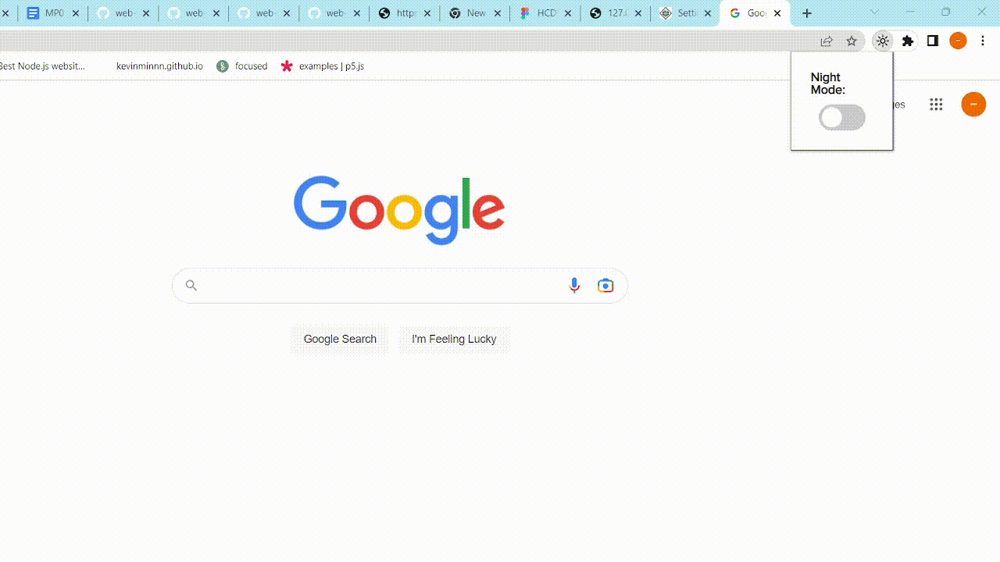

MP1 Write-Up: Browser Extension
1. Overview & Usage:
The Chrome browser extension allows for a day/night mode, which inverts the background and text colors through a simple
toggle switch.

3. Issue Deep-Dive
An issue that occurred was that the event-listener could not receive the message due to a type-error, and thus, failed
to execute the program. The issue seemed more of a logic-based error as it involved how I passed a dictionary. This
dictionary contained the key-value pair that had a boolean value that would make the program execute its document
properties.
My Approach:
• Opened the browser console for the error messages
• Searched for the specific type of errors and possible solutions
• Used the command console.log to determine the location of the bug
• Referred to different Internet sources ex. StackOverflow
• Checked the properties of Chrome’s API
• Attempted different, related commands to check for incompatibilities